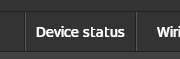
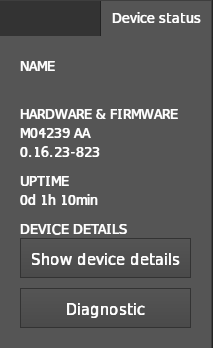
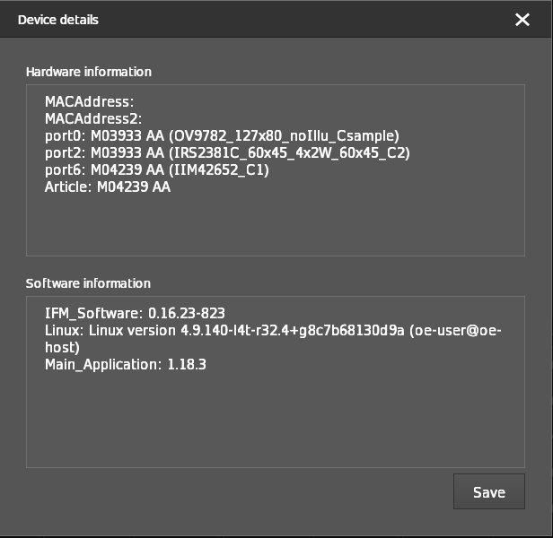
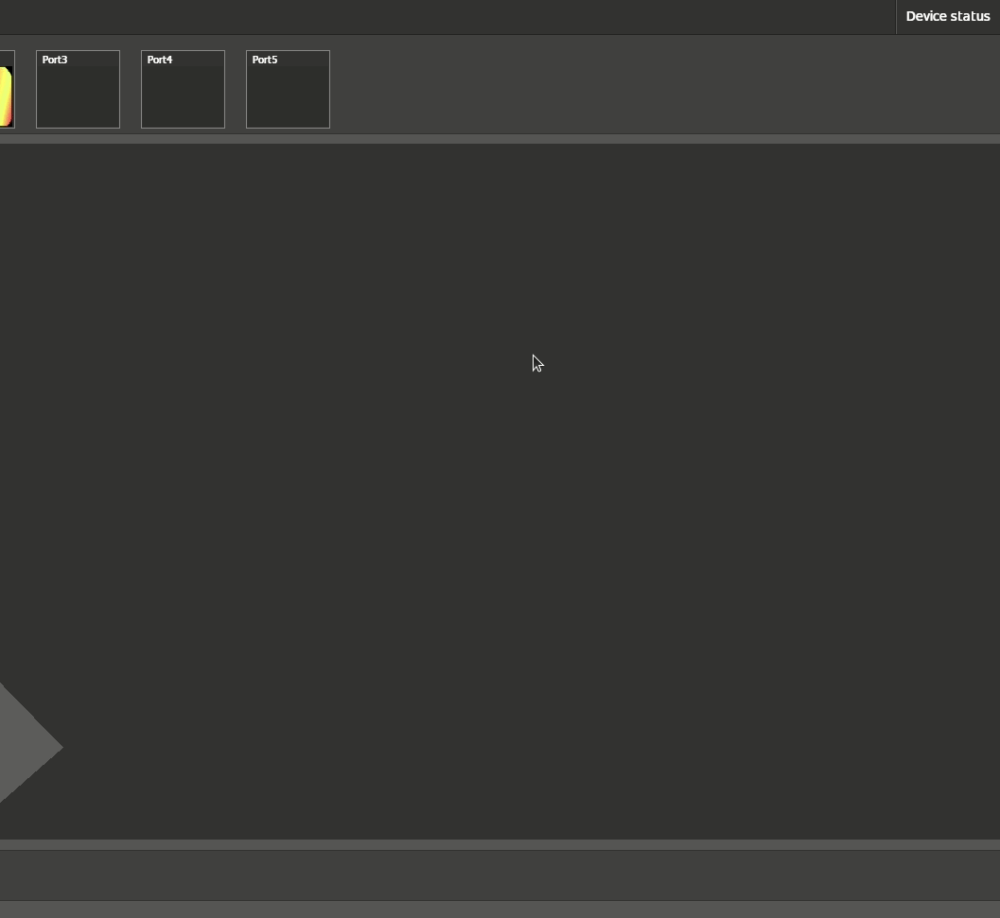

Device and diagnosis data
The O3R system provides device information but also a diagnosis data. This date is useful for easier debugging and provides further information about the state of the whole O3R system and applications.
Displaying the device status
The Device status menu is located in the upper right corner.

This menu provides some short but useful hardware information.

Device details
Show device details provides additional hardware/software information. It is also possible to save this information locally.
Tip: When contacting ifm due to possible issues, the device details are essential for further debugging.

Diagnostic data
The diagnostic data contains several important information like temperature values, active and dormant errors.
Active errors: Errors active during the last system diagnosis information collection.
Dormant errors: Errors which occurred during the total uptime of the system but are not active anymore.
It is possible to filter between active and dormant errors to get a better overview about the actual system status.
It is strongly recommended to monitor the diagnosis information, if the system shows unexpected behavior, for example after connecting new hardware or running new an application.

Tip: When contacting ifm due to possible issues, the list of active errors is essential for further debugging.